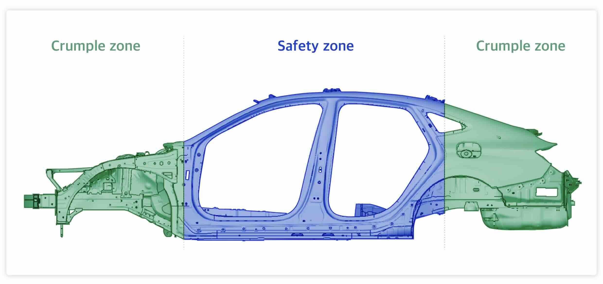

Collisions and Energy Transfer
What Are Collisions?
A collision happens when one object runs into another. Collisions are happening all around us every day! Some collisions are gentle, like a leaf landing on the ground. Others are dramatic, like a wrecking ball smashing into a building.
Here are some examples of collisions we experience daily:
- A baseball bat hitting a ball
- Dropping a pencil that hits the floor
- Drumsticks hitting drums to make music
- Cars bumping into each other
- Bowling balls knocking down pins
A baseball bat colliding with a ball - a perfect example of energy transfer during a collision
Fun Fact!
You experience hundreds of collisions every day, even if you don't notice them all. Even something as simple as pressing keys on a keyboard involves tiny collisions!
Energy and Collisions
When objects collide, something amazing happens - energy transfers from one object to the other!
Important Vocabulary
Energy: The ability to do work or make things happen.
Energy Transfer: When energy moves from one object to another.
Collision: When one object runs into another.
Contact: When two objects touch each other.
Stationary Object: An object that is not moving.
During a collision, the moving object transfers some or all of its energy to the object it hits. This energy transfer is what causes the second object to move, make sound, or change in some way.
A bowling ball transfers energy to the pins during collision, causing them to scatter
Example: Baseball and Bat
When a baseball bat hits a ball, energy from the swinging bat transfers to the baseball. This energy transfer is what makes the ball fly through the air. The faster the bat is swinging, the more energy it transfers to the ball, and the farther the ball will travel!
Speed and Energy Transfer
The faster an object is moving, the more energy it has to transfer during a collision.
Examples of Speed and Energy Transfer:
- A fast-moving bowling ball knocks down more pins than a slow-moving bowling ball.
- A drumstick hitting a drum quickly makes a louder sound than a drumstick moving slowly.
- A baseball hit by a fast-swinging bat travels farther than one hit by a slow-swinging bat.
- Car accidents at high speeds cause more damage than accidents at low speeds.
Car accidents at higher speeds result in more severe damage due to greater energy transfer
This is why speed limits exist on roads. When cars travel at high speeds, they have more energy. If they crash, that energy transfers during the collision, potentially causing more damage and harm.
Think About It:
Imagine you're playing pool. Would you hit the cue ball gently or forcefully if you wanted to spread all the other balls across the table? Why?
Mass (Weight) and Energy Transfer
The heavier an object is, the more energy it can transfer during a collision.
Larger animals typically win territorial disputes because they can transfer more energy during collisions
Examples of Mass and Energy Transfer:
- A truck causes more damage than a small car when hitting an object at the same speed.
- A heavy bowling ball knocks down more pins than a lighter ball moving at the same speed.
- In football, larger players can tackle smaller players more effectively.
- In animal kingdoms, larger animals often win territorial fights because they can transfer more energy during collisions.
This is why weight classes exist in sports like boxing and wrestling. It wouldn't be fair to have a heavyweight boxer compete against a lightweight boxer because the heavier boxer can transfer more energy with each punch.
Think About It:
If a small car and a large truck were both traveling at the same speed and hit a wall, which would cause more damage to the wall? Why?
Combined Effects of Speed and Mass
When considering collisions, both the speed and mass of objects matter. The combination of these factors determines how much energy can be transferred.
Consider these scenarios:
- A heavy object moving slowly
- A light object moving quickly
- A heavy object moving quickly
- A light object moving slowly
Which do you think would transfer the most energy during a collision? The heavy object moving quickly (scenario 3) would transfer the most energy. The light object moving slowly (scenario 4) would transfer the least energy.
This is why a fast-moving truck is more dangerous in an accident than a fast-moving bicycle or a slow-moving truck.
Special Examples of Collisions and Energy Transfer

Newton's Cradle demonstrates energy transfer through a series of collisions

Cars are designed with crumple zones to absorb energy during collisions
Newton's Cradle
Newton's cradle is a desk toy with a series of hanging metal balls. When you lift and release one ball, it swings down and collides with the others. The energy transfers through the balls, causing the ball at the other end to swing up.
When the first ball is released from a greater height (giving it more speed), the last ball swings higher because more energy is transferred through the collision.
Over time, the swinging stops because some energy is converted to sound and heat during each collision.
Car Crumple Zones
Engineers design cars with special crumple zones that absorb energy during a collision. When a car crashes, these zones collapse and absorb some of the energy, reducing the amount of energy transferred to the passengers. This helps keep people safer during accidents.
The faster a car is traveling when it crashes, the more energy the crumple zone needs to absorb.
Bumper Cars
At amusement parks, bumper cars demonstrate energy transfer perfectly. When two bumper cars collide, energy transfers between them, causing changes in their motion. The cars may stop, change direction, or spin depending on how they hit each other.
When bumper cars collide at higher speeds, the passengers feel a stronger jolt because more energy is being transferred during the collision.
Rube Goldberg Machines
A Rube Goldberg machine is a complex contraption that performs a simple task through a series of energy transfers and collisions. These machines show how energy can be transferred from one object to another in a chain reaction.
Each collision in the machine transfers energy to the next component, eventually completing the task.
A Rube Goldberg machine uses a series of collisions and energy transfers to complete a simple task
Energy Transformation During Collisions
During collisions, energy isn't just transferred from one object to another - it can also change form!
Energy can transform into:
- Motion energy: Makes objects move
- Sound energy: We hear the "crash" or "bang" of collisions
- Heat energy: Objects warm up slightly during collisions
When two pool balls collide, you hear a click (sound energy), the balls might feel slightly warmer (heat energy), and they change direction (motion energy).
This is why Newton's cradle eventually stops moving - some of the energy converts to sound and heat with each collision until there's not enough energy left to keep the balls swinging.
Let's Check Your Understanding
Question 1: If a baseball player swings a bat faster, what happens to the distance the ball travels?
The ball will travel farther because more energy is transferred from the faster-moving bat to the ball.
Question 2: Why does hitting a drum harder produce a louder sound?
A drumstick moving faster has more energy to transfer to the drum. This extra energy creates stronger vibrations in the drum, resulting in a louder sound.
Question 3: Why do car accidents at higher speeds cause more damage?
Cars traveling at higher speeds have more energy. During a collision, this greater amount of energy transfers and causes more damage.
Question 4: Why does a larger animal usually win in a territorial fight?
A larger animal has more mass, which means it can transfer more energy during a collision. When two animals butt heads, the larger one usually transfers more energy to the smaller one.
Question 5: What would happen if you released the first ball in a Newton's cradle from a greater height?
The ball on the opposite end would swing higher because more energy would be transferred through the collision due to the increased speed of the first ball.
Real-World Applications
Understanding collisions and energy transfer helps us in many real-world situations:
- Sports: Knowing how to transfer energy efficiently can help athletes hit balls farther, throw more accurately, and improve overall performance.
- Safety: Engineers use knowledge of energy transfer to design safer cars, helmets, and protective equipment.
- Music: Musicians understand how different striking forces on instruments create different sounds.
- Transportation: Understanding the risks of high-speed collisions helps establish appropriate speed limits.
Think About It:
How could understanding energy transfer in collisions help you improve in a sport or activity you enjoy?
Summary: Key Points About Collisions
- A collision occurs when one object runs into another.
- During a collision, energy transfers from one object to another.
- Faster-moving objects transfer more energy during collisions.
- Heavier objects transfer more energy during collisions.
- The combination of speed and mass determines how much energy can be transferred.
- During collisions, energy can transform into motion, sound, and heat.
- Engineers design safety features like car crumple zones to absorb and reduce energy transfer during collisions.
- Newton's cradle demonstrates energy transfer through a series of collisions.
- Understanding collisions and energy transfer has important applications in sports, safety, music, and transportation.